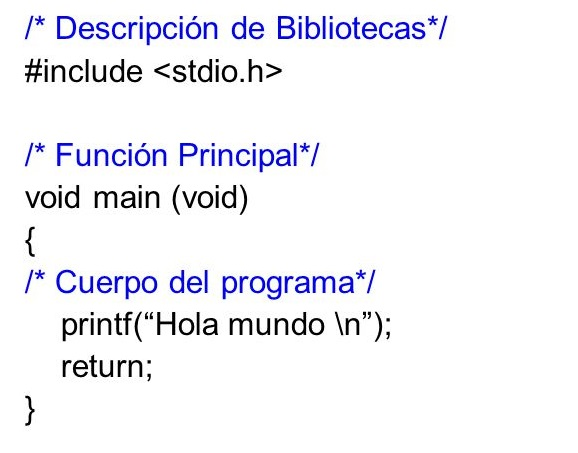

¿Quieres saber qué es el lenguaje C y sus características? En este artículo resolvemos tus dudas sobre este lenguaje de programación de bajo nivel. C es un lenguaje de programación (considerado como uno de lo más importantes en la actualidad) con el cual se desarrollan tanto aplicaciones como sistemas operativos a la vez que forma la base de otros lenguajes más actuales como Java, C++ o C#. El lenguaje C no es sencillo, por eso recomendamos que se haga una primera aproximación realizando un curso de programación en C para adquirir los conocimientos básicos y poder empezar a trabajar con una base sólida.
Tenemos que viajar hasta 1972 para ver el nacimiento del lenguaje de programación C (y el sistema operativo UNIX) de la mano del científico informático estadounidense Dennis Ritchie (con la ayuda de Ken Thompson). Recibió el nombre de C simplemente por una cuestión alfabética, ya que sustituyó a sus lenguajes predecesores B y BCPL que codificaban la minicomputadora PDP-7. El desarrollo del lenguaje C toma protagonismo para la creación del sistema operativo UNIX que llevarían consigo los nuevos minicomputadores PDP-11, primeros en conectar el procesador, los periféricos y la memoria entre sí mediante un BUS bidireccional.
Son varias las características de C tal y como vemos a continuación.
Como inconvenientes, siendo también características del lenguaje C, debemos decir que no es un lenguaje sencillo de aprender, que requiere una continua práctica y un serio seguimiento si queremos tener el control de los programas.
Todos los programas que son creados tienen un diferentes tipos de
formato. Este formato es conocido como la sintaxis. La sintaxis en C es
una serie de reglas y procesos que lideran la estructura de un programa.
Estas reglas tienen que ser entendidas por el compilador para que se
pueda crear un programa en C válido, es decir, tienen que establecer
cómo comienza una línea de código en C, cómo termina o cuándo usar, por
ejemplo, comillas o llaves. El lenguaje en C hace distinción entre
mayúsculas y minúsculas siendo este el motivo por el que se programa en
minúsculas.
La sintaxis básica en C determina la forma en que se agrupan los
caracteres para formar tokens, que son la unidad mínima de programación
en C. Tomando como ejemplo el programa “Hola Mundo”, usado para la
introducción a la mayoría de lenguajes de programación, tendríamos el
siguiente código en C:

Si seleccionamos sólo la línea de código printf, tendríamos los
siguientes tokens: printf, (, “, Hola Mundo, “, ), y ;. Por lo tanto,
podemos decir, que estos tokens son los pequeños bloques con los que se
programa en C, pudiendo ser variables, identificadores, constantes,
palabras clave, símbolos que comprenda el lenguaje o sentencias en
lenguaje C.
El comienzo de todo programa en este lenguaje debe comenzar por #include
cuya función es inicializar el entorno de trabajo; en nuestro ejemplo,
vinculando el archivo stdio.h (biblioteca de C) que a su vez contiene la
orden printf.
La función en lenguaje C int main() hace que el programa vuelva a ese
punto de retorno tras ejecutarse y su orden está delimitada entre {}.
Cómo en la mayoría de los lenguajes de programación, nos podemos ayudar
de comentarios que el compilador no procesará pero que nos serán de
mucha utilidad a la hora de aclarar cualquier concepto en la línea de
código. Podemos hacer los comentarios en lenguaje C de dos maneras; una
única línea de comentario comenzando con // o en múltiples líneas
comenzando y terminando por /*.